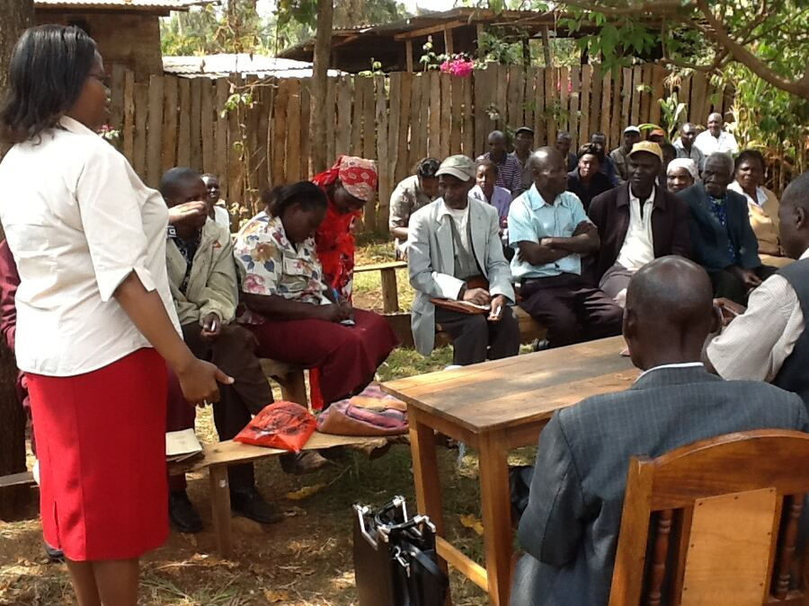
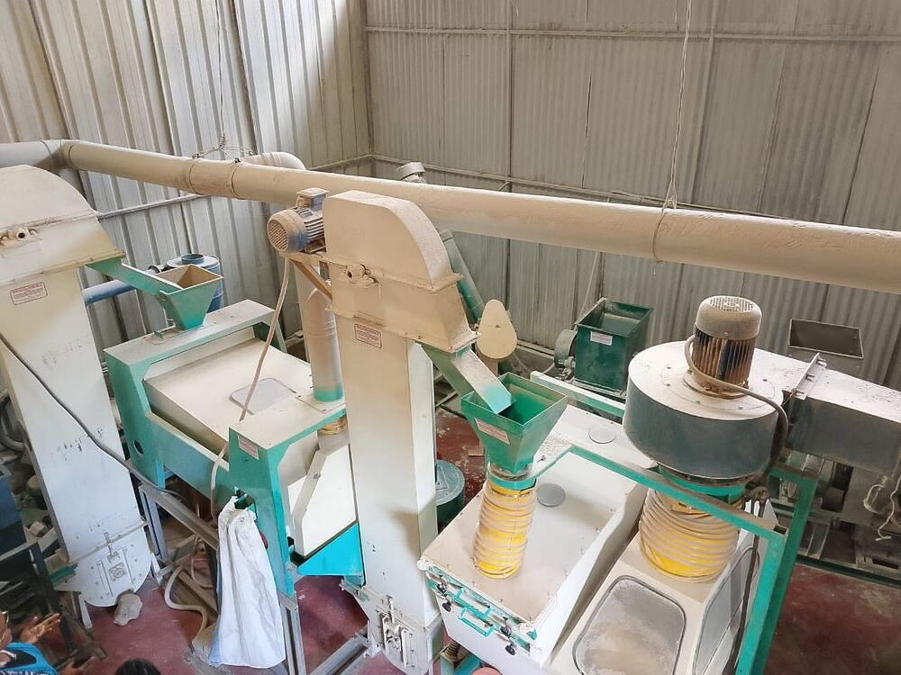
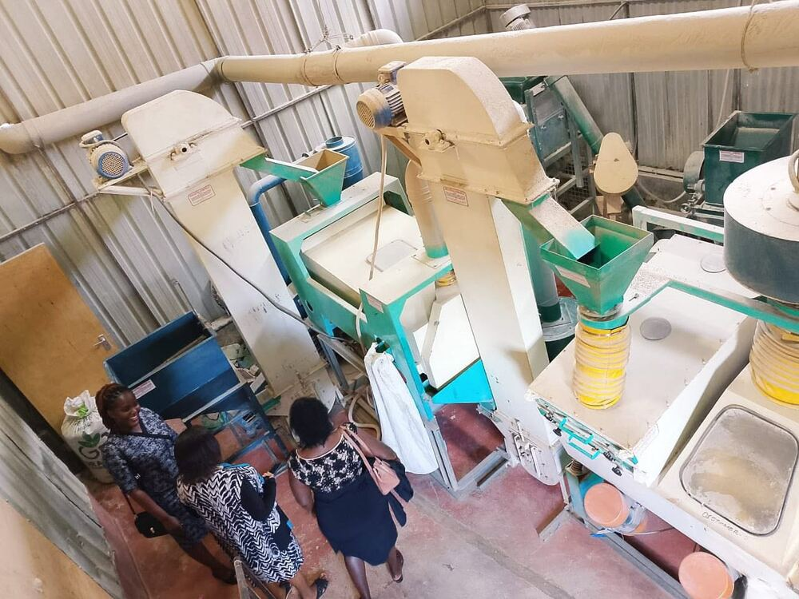
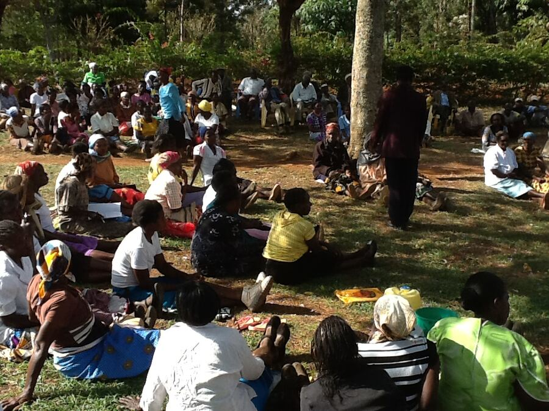
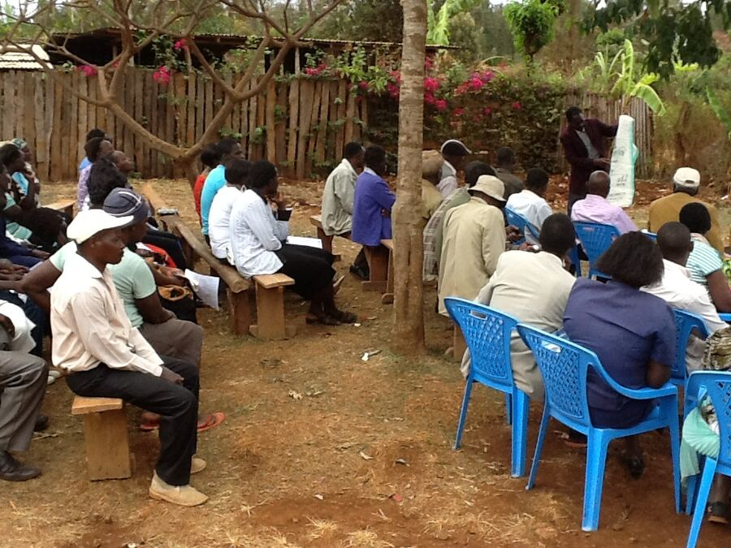

Six pillars, one mission — from the farmer's field to the family table.
Before the stories, the scale — a snapshot of what six years of value addition has built.

Jufra sources sorghum, finger millet, pearl millet and grain amaranth directly from smallholder farmers across Tharaka-Nithi County — at consistent, fair farmgate prices. That reliability lets farming households plan their season with confidence, rather than gambling on unpredictable markets.

Every Jufra product is processed naturally — no chemicals, no preservatives, no additives. Calcium-rich finger millet, low-GI sorghum and protein-dense amaranth bring back nutrients that refined flours strip away, one family meal at a time.

From milling and quality control to packaging and logistics, Jufra's growth has created real, local career paths for young people in Tharaka-Nithi County — work that didn't exist here a decade ago.

Women make up a significant share of Jufra's supply chain — from the fields where grain is grown, to the processing floor, to the retail shelves where products are sold. Their work is central to Jufra's story, not incidental to it.

Sorghum and millet are naturally drought-resilient, needing far less water than maize. By reviving demand for these indigenous crops, Jufra helps preserve a form of agriculture better suited to Kenya's increasingly unpredictable rains.

Every stage of processing that happens in Chuka rather than elsewhere keeps more of the grain's value inside Tharaka-Nithi County — funding local jobs, local suppliers, and local livelihoods.
Jufra Food Processors was profiled by the Micro and Small Enterprises Authority (MSEA) as part of the World Bank-supported Kenya Jobs and Economic Transformation (KJET) Project — a national initiative highlighting Kenyan enterprises driving jobs through agro-processing and value addition.
The profiling recognized Jufra's work turning raw indigenous grains into market-ready, nutritious products, its strong farmer partnerships, and its role in creating more than 400 youth employment opportunities through seed development, aggregation, processing and distribution.
This recognition affirms what we've always believed — that indigenous grains, processed with care, can create both nutrition and opportunity for our communities.
Indigenous grains like sorghum and millet are naturally drought-resilient, needing less water than maize.
Reviving demand for traditional grains helps preserve crop diversity suited to Kenya's changing climate.
Direct relationships with smallholder farmers mean shorter, more transparent supply chains.
Quality-tested processing reduces post-harvest losses that would otherwise go to waste.